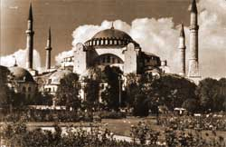
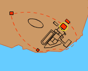

Hagia Sophia
This church was built in AD 532 by the Emperor Justinian, on the site of two earlier churches. It stood opposite the palace and was where the most important religious and state ceremonies were held. It was not only the emperor's church but also the church of the patriarch, who was the chief bishop in the city.
It is different in shape from many European churches as it is square in plan. It also has a large dome over the middle of the nave. In 558 part of the dome collapsed and had to be repaired. For one thousand years this was the biggest church in the world.



Hagia Sophia
